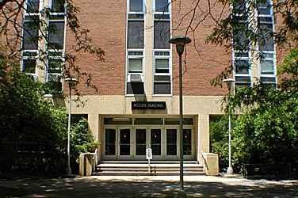

About Us
Cognitive Area faculty investigate a wide range of topics including comparative cognition, language, learning, memory, perception, planning and action, and rhythms of human behavior. We use a wide range of methodological approaches in our research including functional neuroimaging (fMRI, EEG, DTI), behavioral approaches, as well as computational and mathematical modeling. Our area promotes cross-disciplinary collaboration through an extensive network of university affiliations that facilitate research initiatives spanning the globe.
We are committed to providing students with high quality training in an atmosphere that promotes many formal and informal interactions with faculty and peers from around the department and the university. Our program is tailored to meet the individual needs of our students. Students may choose to participate in the APA award-winning Specialization in Cognitive and Affective Neuroscience (SCAN) program, or select from a variety of minors and dual-degree options as appropriate. For more information, see the Prospective Graduate Students link.